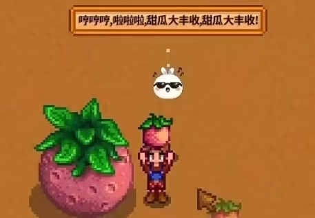

边玩边说
按住语音说：“小汤圆，帮我做一份游戏行业影响汇报。”
VOICE INPUTAI NATIVE GAME HARNESS · WORK ORCHESTRATOR
你继续种田、钓鱼、探险。小汤圆听懂你的工作要求，调用合适的生产力工具去干活，并在游戏里主动向你汇报。
DSH AGH WORK ORCHESTRATOR · VERSION 0.1.7
生产力会越来越膨胀。人要做的，不再是亲自守着每一个进度条，而是提出目标、判断方向、享受更多娱乐与文化产品。
可今天的 AI 仍把人拽回聊天框、文档和任务面板。我们的答案很直接：把 AI 和办公工具接进游戏 NPC。
玩家用最自然的语音交代工作；NPC 先陪你聊，再在后台理解要求、调用工具。你继续玩，它持续做；有结果，它主动来报。
“不是把游戏变成办公室，
而是让办公室退到游戏背后。
工作识别发生在 NPC 回答之后。语音不会被长任务卡住，游戏也不用暂停。
按住语音说：“小汤圆，帮我做一份游戏行业影响汇报。”
VOICE INPUT小汤圆先正常回答：“好，交给我。你继续玩。”
FAST REPLYNPC 在后台调用研究、写作和办公工具，持续完成工作。
DURABLE SESSION思路、进度和成果回到游戏。你随时用语音纠正，NPC 会接着干。
REPORT & ITERATE这里没有打字聊天框。玩家按住说话交代工作，或者挥动小皮鞭催一催；NPC 直接用游戏里的语音和头顶气泡回应。真实记录留在 DSH Session，最终文件留在它的 Workspace。
不打开聊天窗口，不暂停游戏：说一句、抽一下，NPC 自己去干活。
NPC 根据任务选择已安装能力。DSH 在底层保持长期上下文；代码、研究和复杂文件工作可以继续交给成熟工具。
持久 Session · Workspace · Agent · 工具路由
真实边界：本仓库已经实现 Session 编排；Claude Code、Codex 等外部工具需要在运行环境中单独安装、登录并启用 Provider，未安装时不会假装调用成功。
这套能力不绑定某个角色或某款游戏。每款游戏通过自己的 Adapter 接收语音、动作和通知，NPC 在不同游戏里都能继续工作。

语音交代、游戏动作催办、NPC 主动汇报。
VOICE + ACTION
陪伴角色理解殖民地状态，也能接收外部工作。
COMPANION + SKILL
学习游戏技能，同时让 NPC 处理生产力任务。
LEARN + EXECUTE参赛作品 · DSH AGH WORK ORCHESTRATOR